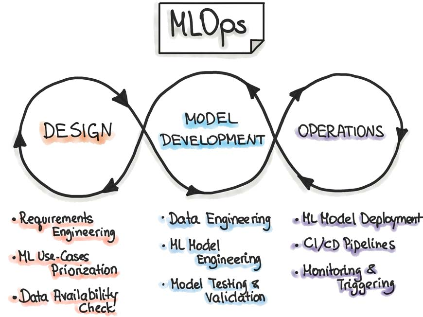

Grupo 4️⃣ Despliegue & Monitorización
Introducción a despliegue y Monitorización

Producción de Modelos (MLOps)
La puesta en producción de modelos (MLOps) es el proceso de desplegar un modelo de Machine Learning en un entorno real para que pueda usarse de forma automática en aplicaciones o sistemas. Incluye también monitorizar su rendimiento, gestionar versiones y actualizar el modelo para asegurar que sigue funcionando correctamente con nuevos datos.

Leibniz y el cálculo lógico
Gottfried Wilhelm Leibniz soñó con crear una “máquina de razonamiento” que pudiera realizar deducciones lógicas, anticipando la noción de una computadora simbólica.

George Boole y el álgebra booleana
Boole formalizó la lógica con operaciones matemáticas que más tarde permitirían el desarrollo de circuitos digitales y lenguajes de programación.

Alan Turing y las bases de la computación
Turing propuso la idea de una máquina capaz de ejecutar cualquier proceso lógico. Su modelo teórico marcó el inicio del pensamiento algorítmico que haría posible la IA.
“Podemos considerar que el razonamiento es una forma de cálculo.” — Leibniz